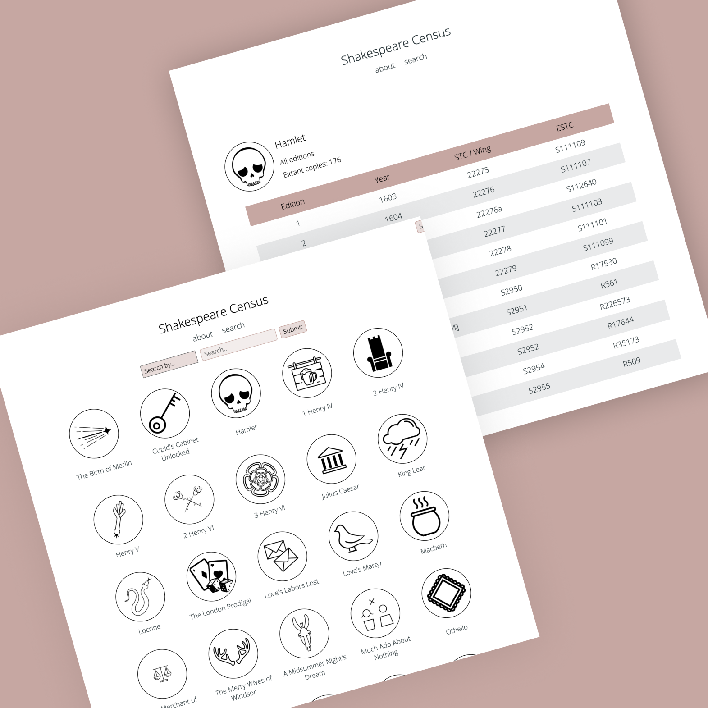
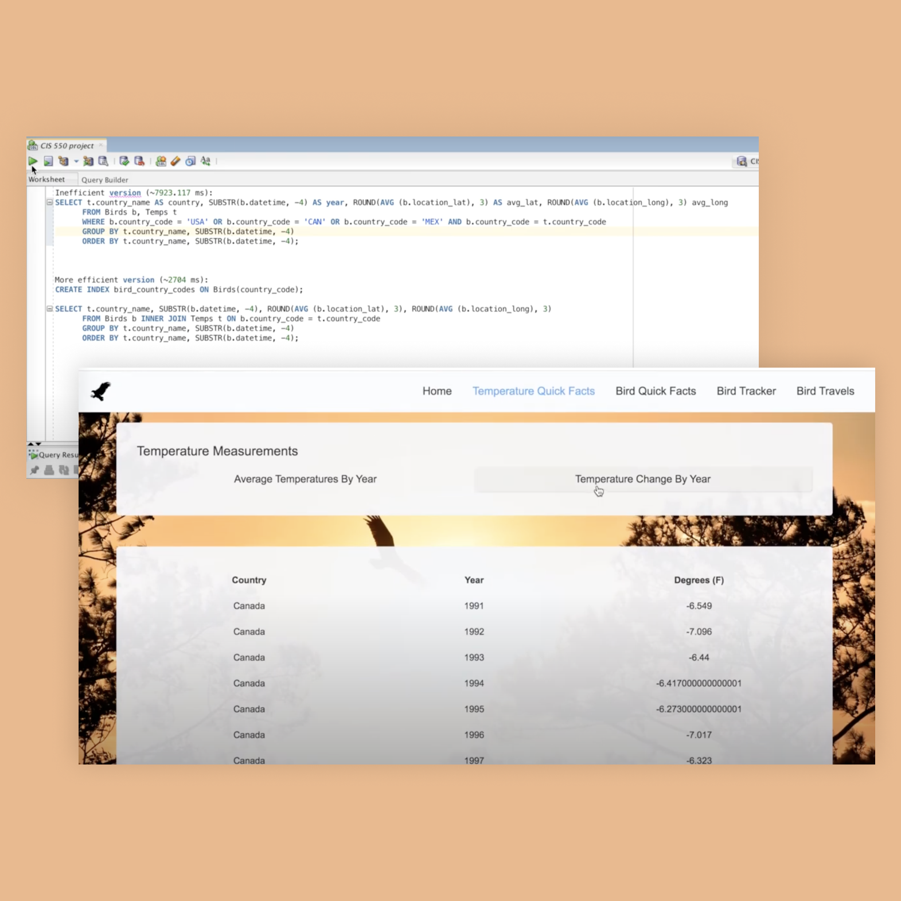
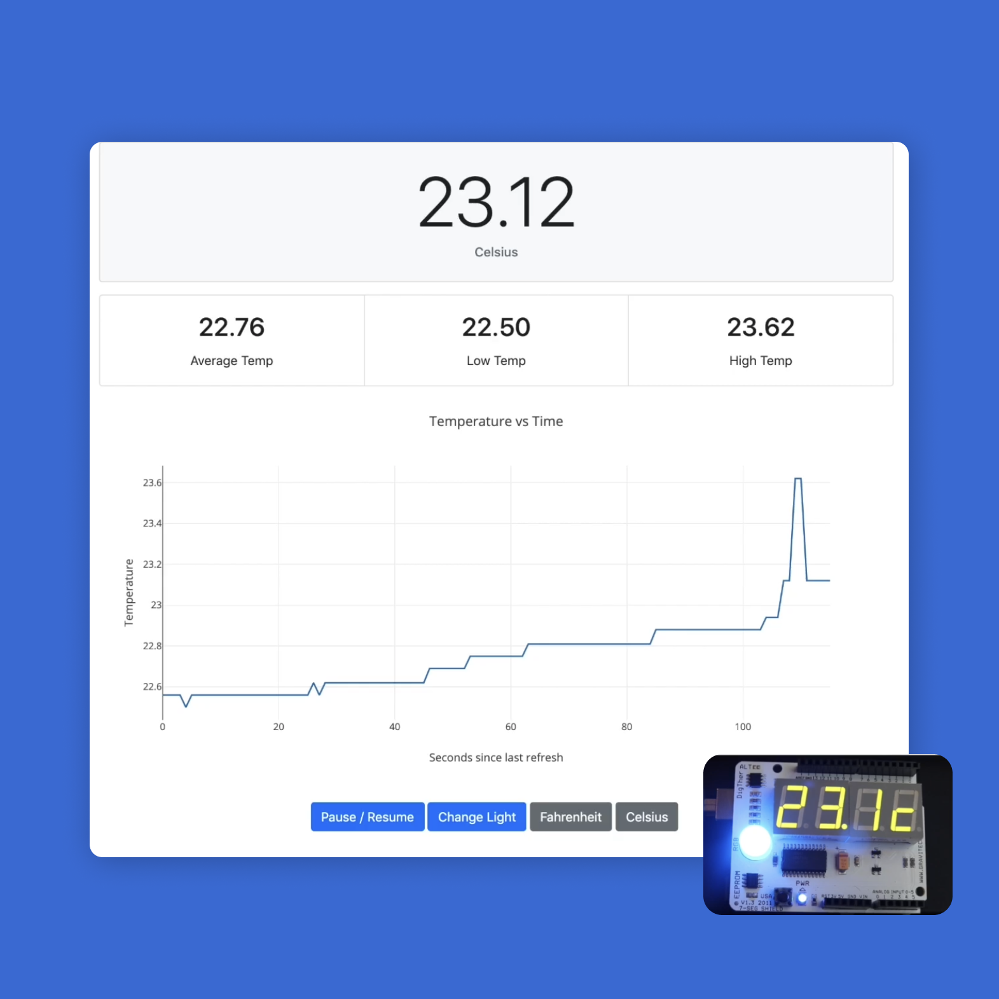
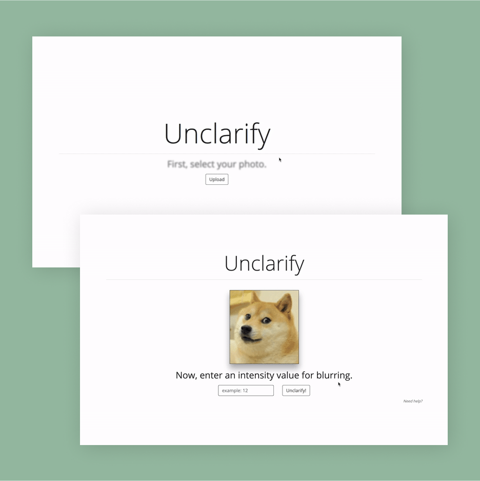
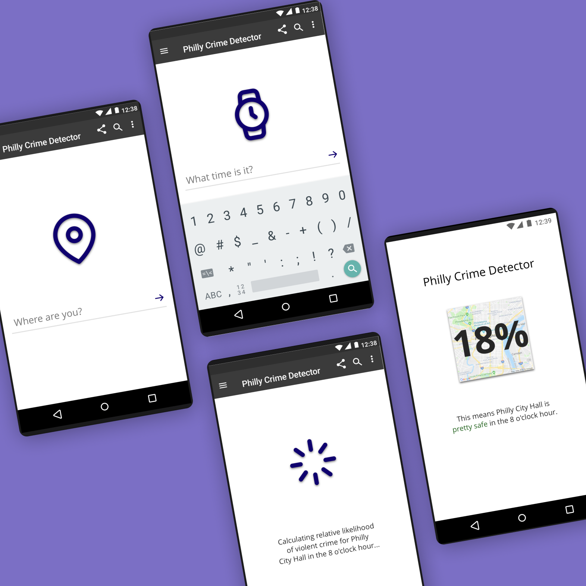

- 
- 
- 
- 
- 

Material Texts
As a frontend developer for Penn Libraries, I worked on the website for UPenn's Workshop in the History of Material Texts. During Summer 2019, I worked on developing a large, searchable database of seminars that have been held since 1996.
View live sitePython, Django, Docker, HTML, CSS, JavaScript

Shakespeare Census
The Shakespeare Census aims to locate and describe all extant copies of all editions of Shakespeare’s works through 1700 (with the exception of the folios). As a frontend developer, I worked on the search feature and displaying the results.
View live siteOn the Fly
On the Fly is a database-enabled web application that seeks to determine how migration patterns in Golden Eagles have changed in relation to changes in climate over time. This was a project for my Database and Information Systems course at the University of Pennsylvania.
Angular, Express.js, Node.js, OracleDB, query optimization
What's the Temp?
As a project for Computer Systems Programming at the University of Pennsylvania, I worked with three classmates to develop a system with embedded and web components. The web app gets data from and sends control information to a remote sensor and display driven by an Arduino microcontroller.
Arduino, C, HTML, CSS, Bootstrap, JavaScript
Unclarify
Unclarify implements a box blur on a bitmap image provided by the user. This began as an assignment for practice with POSIX Threads and the QDBMP library, and I created a GUI just for fun.
C, HTML, CSS
Crime Estimator
This Java application calculates the likelihood of crime for a user based on his or her location and the time of day using Philadelphia Police Department crime incidents from 2017 through 2018. More than 228,000 crimes are included in the analysis!
View the repoJava, Google Geocoding API